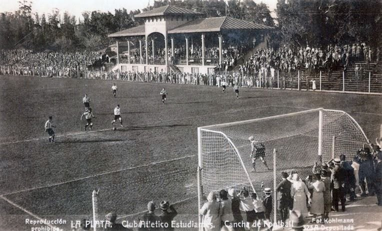
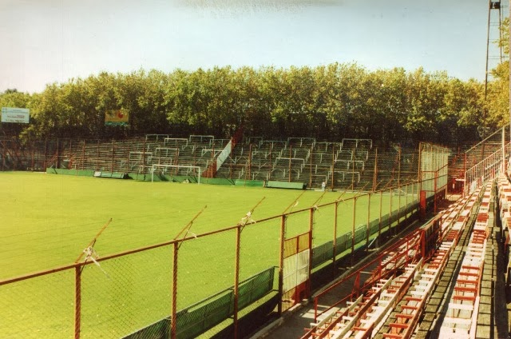
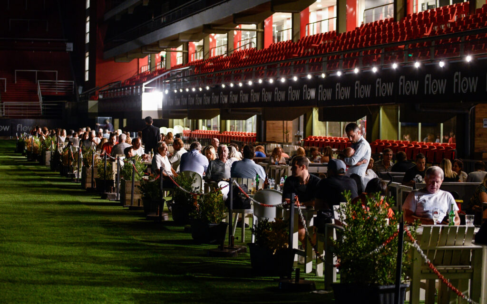

Estadio de Estudiantes de La Plata:
Jorge Luis Hirschi
Primeras imagenes del Hirschi.
Vista del Estadio viejo, antes de su demolicion en el año 2007.
Vista previa del Estadio, modernizado y ampliado.



Jorge Luis Hirschi